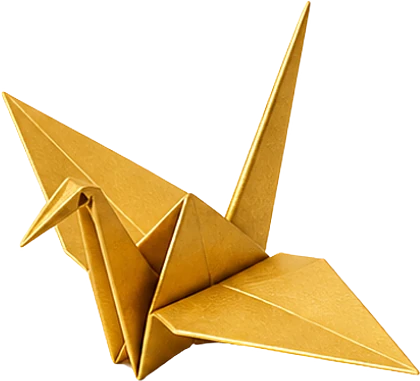
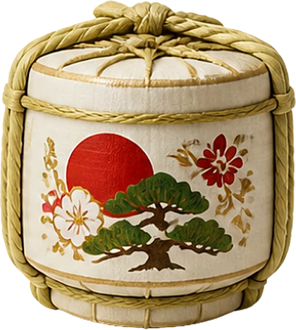
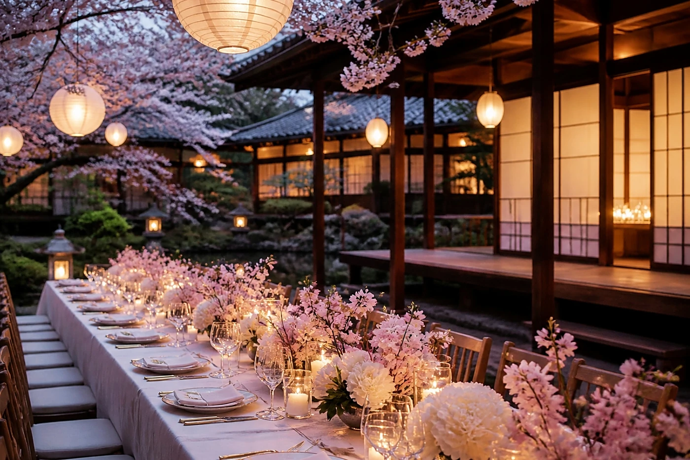
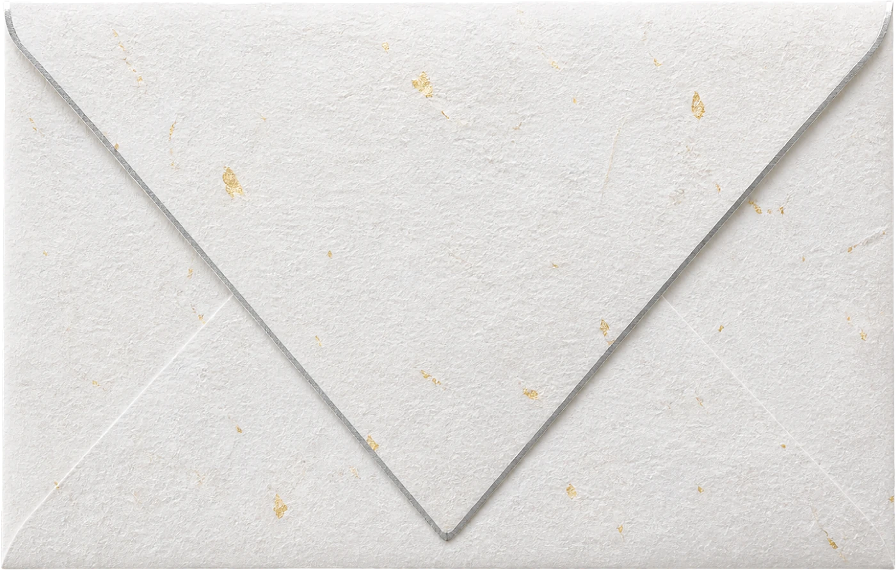
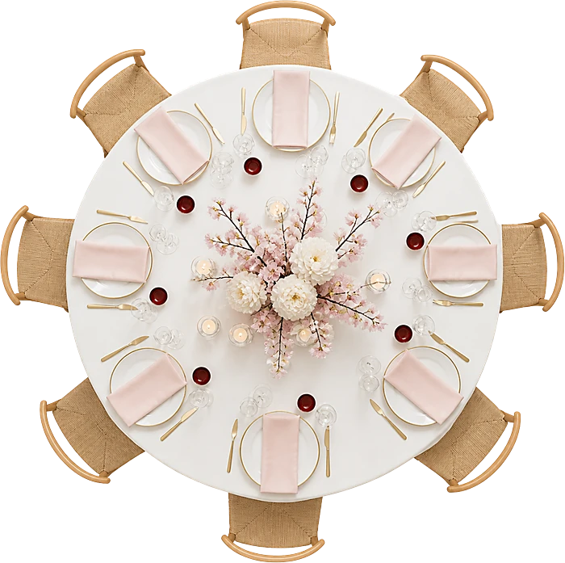

Notre histoire
Ils se sont rencontrés à Paris, dans une librairie, la main sur le même recueil de haïkus. Yui lui a appris à plier des grues de papier ; il en a plié mille pour lui demander sa main. Ils se diront oui à Kyoto, au moment où les cerisiers fleurissent.

Le programme
Samedi 3 avril 2027
- 11 h 00Cérémonie shintō : trois coupes de saké partagées
- 11 h 45Échange des alliances
- 12 h 30Promenade sous les cerisiers

17 h 00Cocktail et mille grues de papier
19 h 00Dîner et ouverture du tonneau de saké- 22 h 30Gâteau des mariés
Le lieu

Jardin de la Maison Haru
Kyoto

Hébergement
Tenue
Printemps habillé
Rose sakura, gris perle, bleu nuit, ivoire. Le blanc reste à la mariée. Un kimono est le bienvenu pour celles et ceux qui le souhaitent, sans aucune obligation.
Le compte à rebours
Votre place

Le jour venu, trouvez votre table en un instant.
Voir le plan de tableListe et cagnotte
Votre présence est notre plus beau cadeau. Pour ceux qui le souhaitent :
Participer à la cagnotte- Service à thé80 €
- Linge de maison120 €
- Week-end en amoureux250 €Déjà offert
Réservez le cadeau que vous offrez : les autres invités le voient pris. La cagnotte et les boutiques sont celles des mariés ; Maison Vivat ne touche jamais l'argent.
Votre réponse
Merci de répondre avant le 1er mars 2027.